同一份数据、同一批功能，5 种完全不同的设计语言。全部通过 320→1920px 逐像素布局扫描。
| # | 方案 | 基底 | 配色策略 | 布局 | 辨识度来源 | 风险 |
|---|---|---|---|---|---|---|
| 1 | 终端蓝图 | Linear + Raycast | 暗色 + 唯一强调色 | 常规（侧栏） | 等宽数据层、圆环符号、Agent 徽标 | 低 · 最稳妥 |
| 2 | 色谱铺开 | Stripe + PostHog | LOGO 四色全用 | 常规 + 全宽渐变头图 | 渐变头图、彩色统计卡 | 中 · 渐变易"糊" |
| 3 | 亮色精密 | Vercel + Linear 亮色 | 近黑白 + 细彩条 | 顶部横导航 | 52px 超大标题、无卡片设计 | 低 · 最"高级" |
| 4 | Agent 中心 | 无先例（原创） | 暗色 + Agent 状态色 | Agent 任务队列 | 界面显示 AI 在做什么 | 高 · 依赖后端接口 |
| 5 | 二进制极简 | Supabase | 近单色，仅状态有色 | 常规（窄侧栏） | 二进制底纹、无底色状态标签 | 低 · 最克制 |
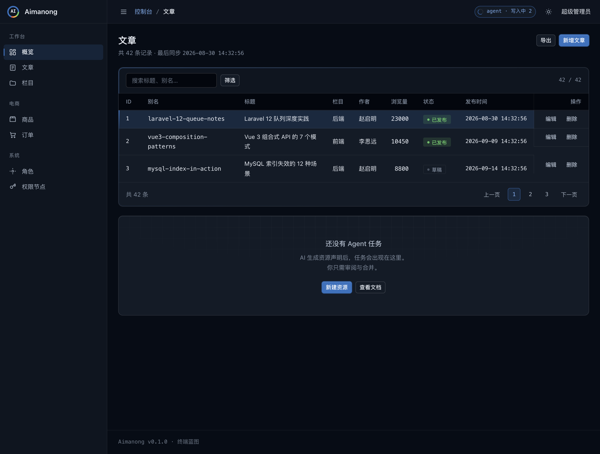
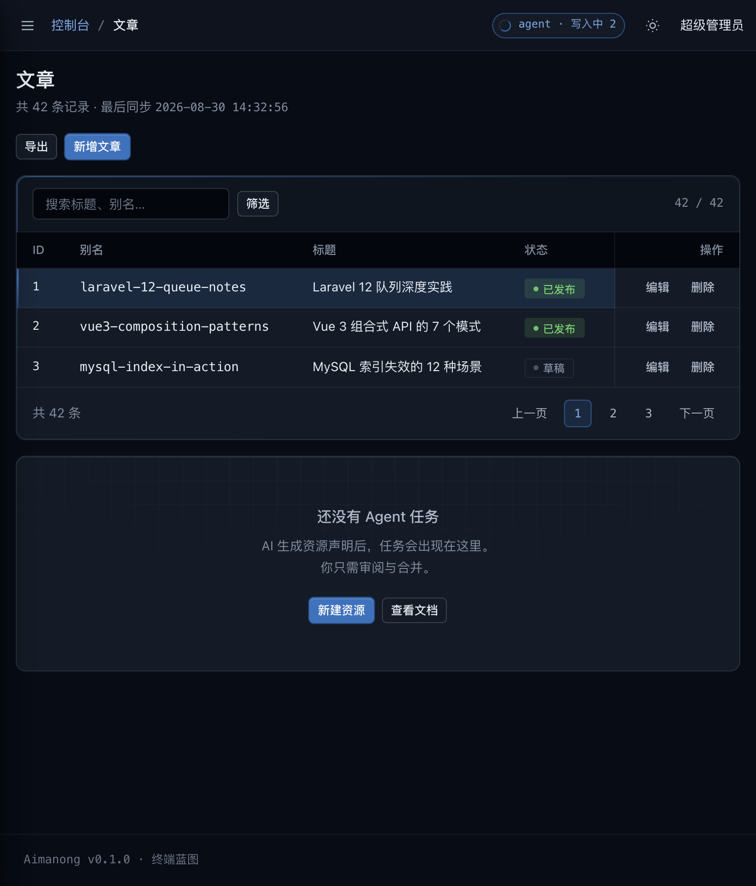
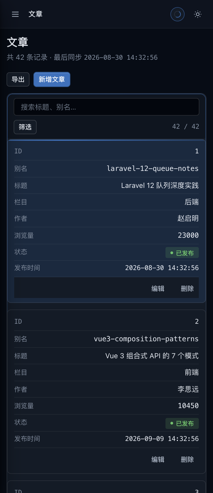
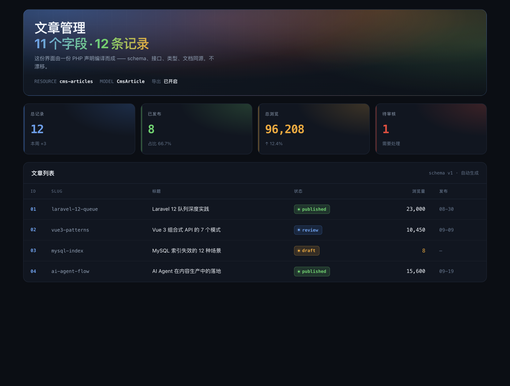
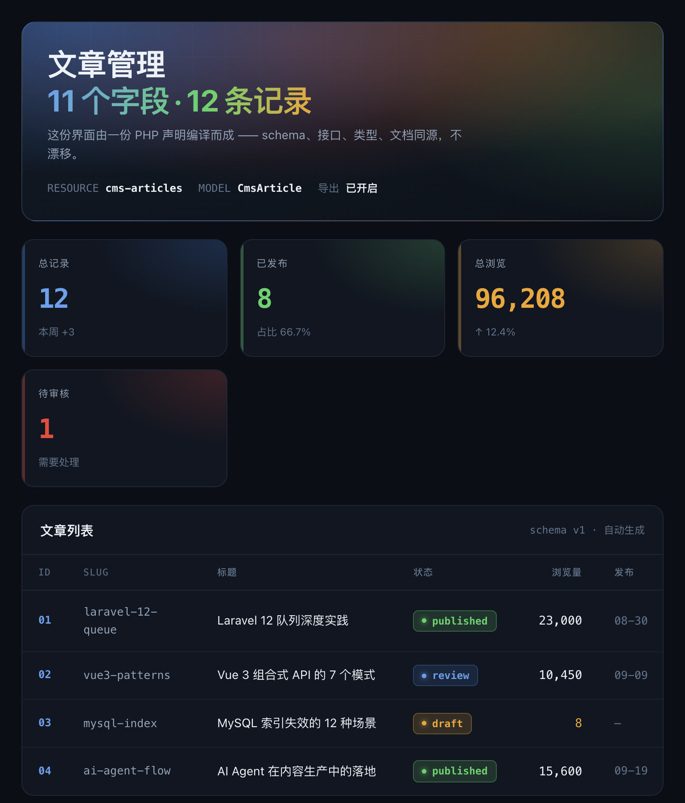
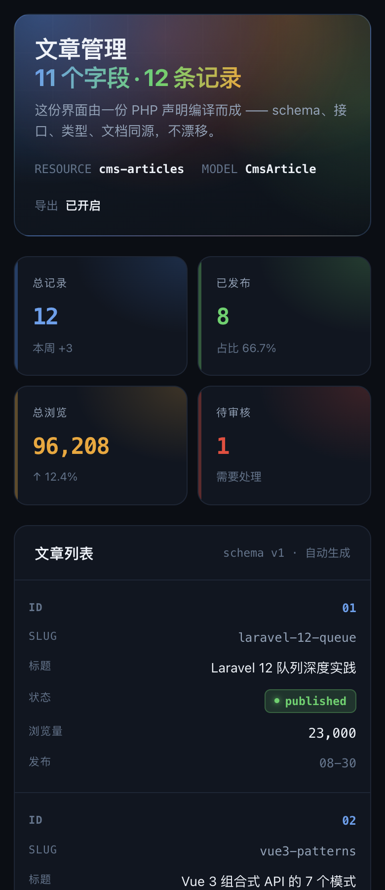
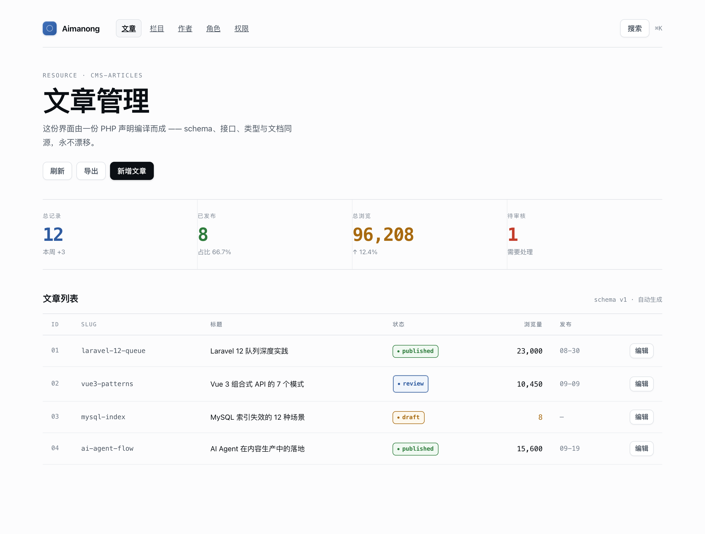
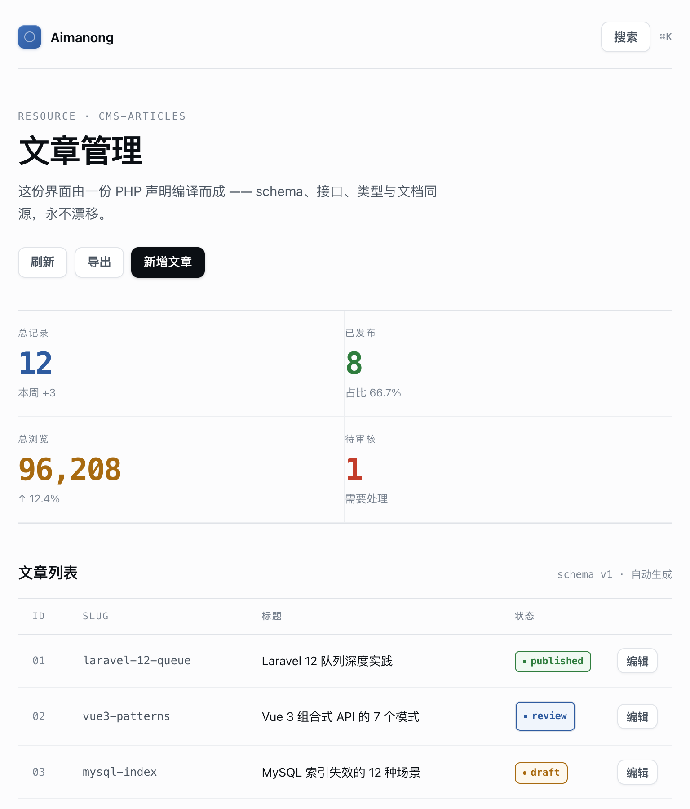
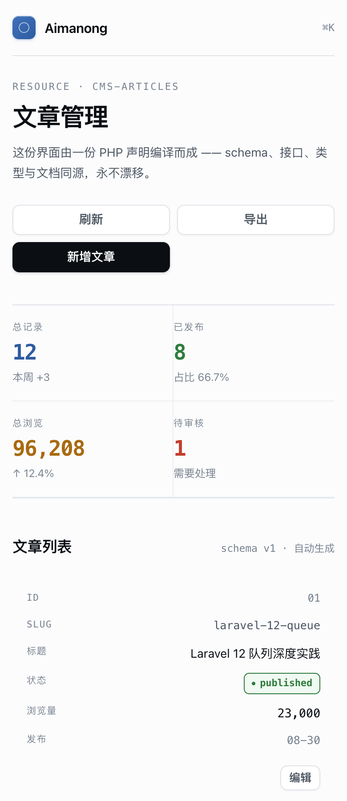
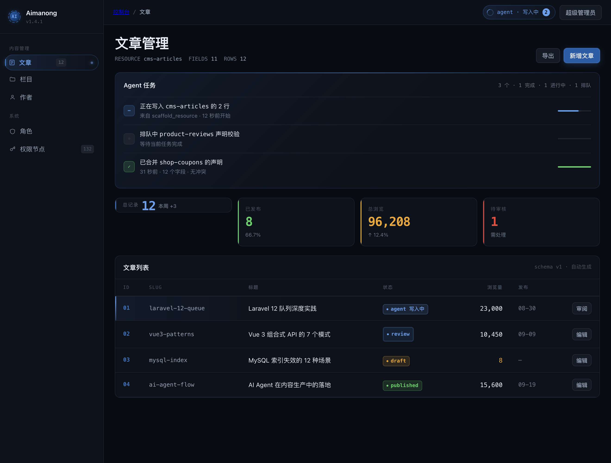
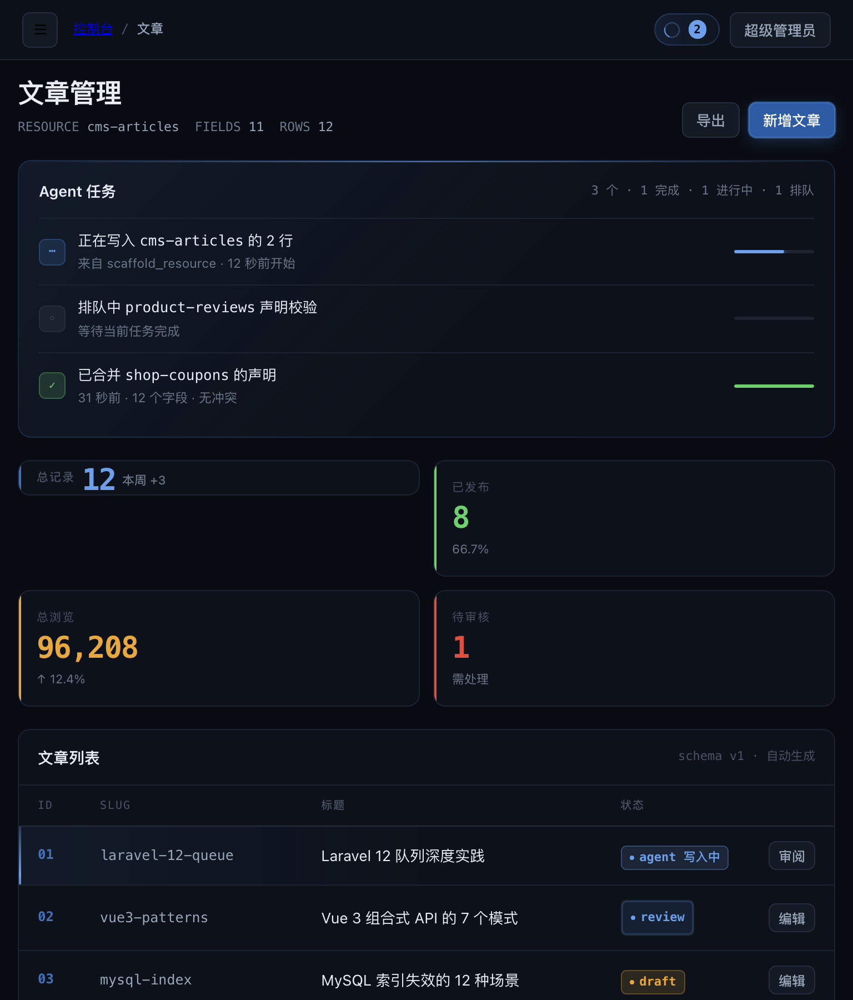
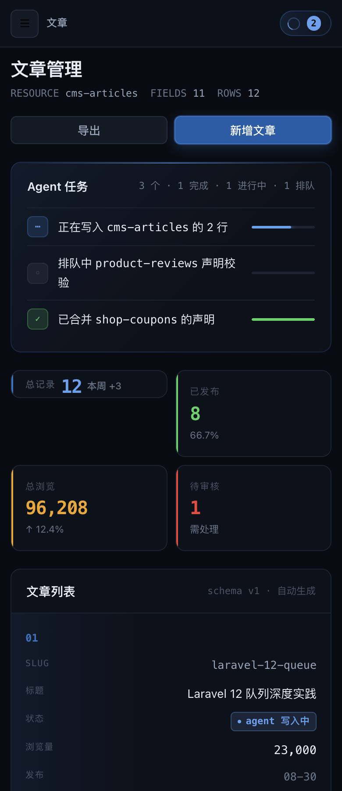
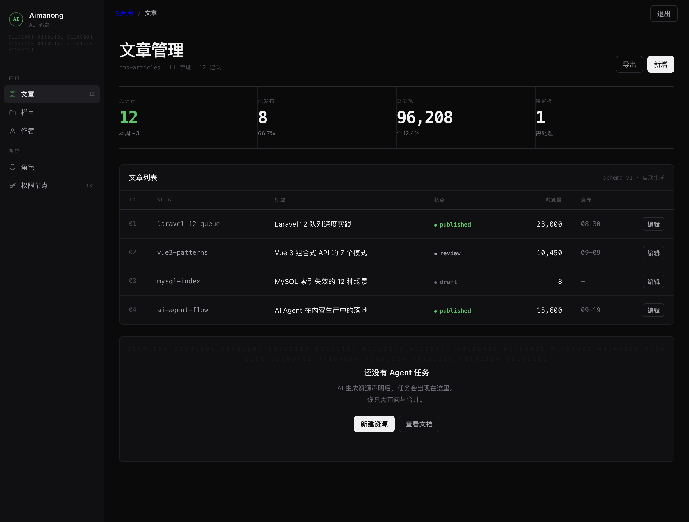
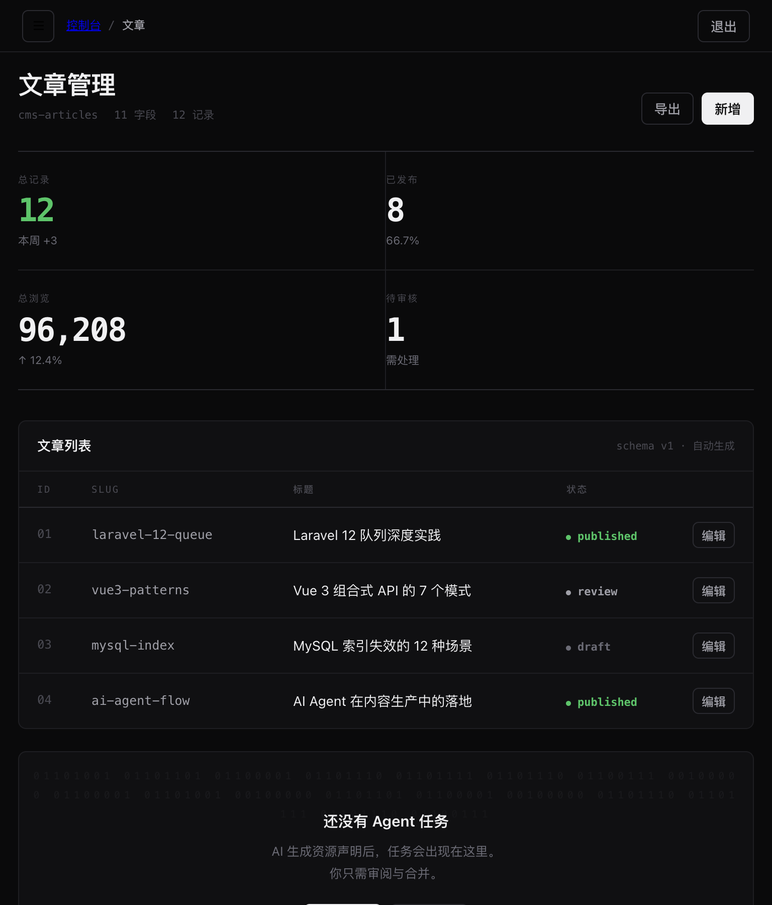
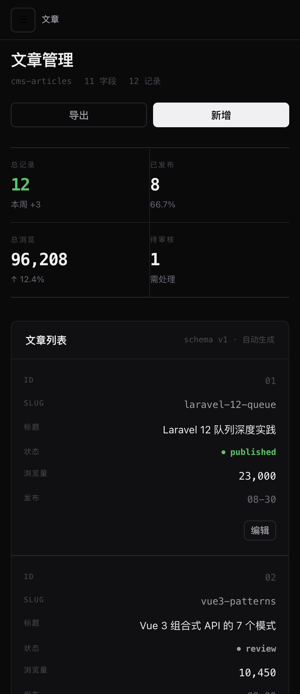